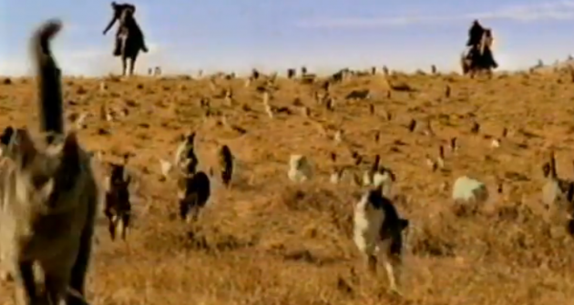
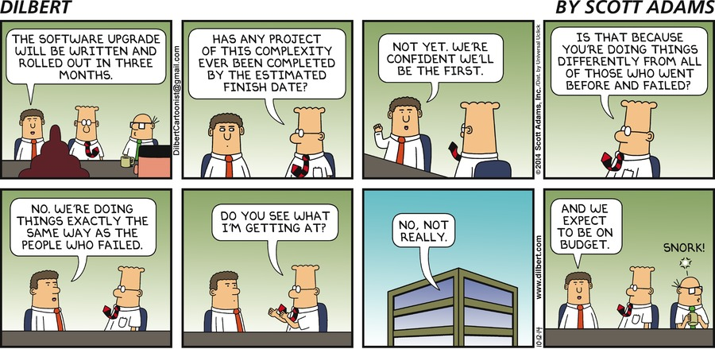
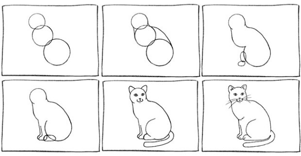
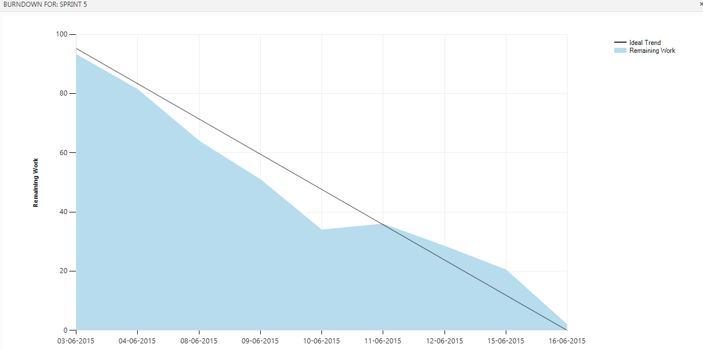

Agile software development describes a set of principles for
software development under which requirements and solutions evolve through
the collaborative effort of self-organizing cross-functional teams. Based
off Agile Architecture, it advocates adaptive planning, evolutionary
development, early delivery, and continuous improvement, and it encourages
rapid and flexible response to change.
Agile
Formalized in 2001 in the Agile Manifesto
Agile was already a thing
This was just gathering the ideas of practices that were being very succesful at the time
Individuals and interactions over processes and tools
Working software over comprehensive documentation
Customer collaboration over contract negotiation
Responding to change over following a plan
Value the items on the right...
But more the items on the left
Agile Manifesto: 12 Principles
1. Our highest priority is to satisfy the customer through early and continuous delivery of valuable software.
2. Welcome changing requirements, even late in development. Agile processes harness change for the customer's competitive advantage.
3. Deliver working software frequently, from a couple of weeks to a couple of months, with a preference to the shorter timescale.
Agile Manifesto: 12 Principles
4. Business people and developers must work together daily throughout the project.
5. Build projects around motivated individuals. Give them the environment and support they need, and trust them to get the job done.
6. The most efficient and effective method of conveying information to and within a development team is face-to-face conversation.
Agile Manifesto: 12 Principles
7.Working software is the primary measure of progress.
8. Agile processes promote sustainable development.The sponsors, developers, and users should be able to maintain a constant pace indefinitely.
9. Continuous attention to technical excellence and good design enhances agility.
Agile Manifesto: 12 Principles
10. Simplicity--the art of maximizing the amount of work not done--is essential.
11. The best architectures, requirements, and designs emerge from self-organizing teams.
12. At regular intervals, the team reflects on how to become more effective, then tunes and adjusts its behavior accordingly.
Types of Agile
Kanban
Continual Delivery
No defined time frames
Scrum
Short sprints
XP - Extreme Programming
TPS - Toyota Production System
Just in time prodution
Implementing Agile
We start off herding cats

We become more agile individually
We reach Lean Mean Agile Team
But to get there, we need change

Scrum Structure

Scrum - Sprint
Predefined size sprints
Short, generally 2 weeks to a month
We use 2 weeks
At the end of a sprint, a release is done
Used to do this in JCI
Working on in CPower
Scrum - Stories
Often lots of mystery here, but should not be
Just a description of work
Understandable to all
Sized in a general way
Like big/small/medium
Not a time estimate
Provides a feature which can be implemented
Fits in a sprint
Stories get broken into tasks
Assignable to a team member
Have actual time estimates, ideally not more than 8 hours
Stories have a general description
Including why this is useful
Stories have a very precise set of acceptance criteria
This defines what is required for the story to be considered done
Conversely, implies that if the criteria is met then the story is done
Scrum - Backlog
As stories are generated they are placed in a list
This is the backlog
In priority sequence
Scrum - Velocity
Calculation of how much a team member can do in a sprint
Calculated at beginning of each sprint
Includes allowance for Scrum meetings
Includes special items for the sprint
Vacations
Business training
Anything which means not availble to work on sprint
Group can select tasks for each person until reach velocity limit
Scrum - Burndown
Each task has a running estimate of remaining hours
This remaining time is displayed as a Burndown Chart
Scrum - Burndown

Scrum Roles
Product Owner
Responsible for maximizing the value of the product and the work of the team.
Is a person, not a committee
May represent the direction of a committee
But anyone wanting to change the product backlog must go through prodcut owner
How role is done can vary widely between teams
Product Owner Responsible for...
Clearly expressing backlog items
Ordering backlog items to best acheive goals
Product Owner may do the work directly
Or may have team do it
But remains responsible
Development Team
Group of people who deliver a potentially releasble increment of done work at the end of each sprint
Empowered by the organiztion to manage their own work
The work being to turn product backlog items into the releasable increments
Scrum recognizes no titles other than Developer
Scrum recognizes no sub-teams regardless of specialized domains
Team members may have specialized skills or focus, but accountabililty belongs to the team as a whole
Scrum Master
Provide expertise about Scrum process
Schedules and runs Scrum meetings
Removes obstacles for the team
Actually has huge list of potential responsibilities all
dealing with the goal of helping the Product Manager and
the Development Team use Scrum effectively
Scrum Meetings (Ceremonies)
Scrum Meetings
Most are done each sprint
The ongoing process of "how we work the sprint"
Grooming
Process of refining a story so it is ready to be worked
Is done by the team
Though as we do it can often be done by a subset of the team
It is possible that a story will be groomed multiple times
Process of refinement, getting additional information
Ideally happens 2-4 times during a sprint preparing for future sprint
Though we do once a sprint
Ideally have 2-3 sprints worth of work groomed at any point in time
Not end of the world if not
But both future grooming and planning processes will be much less smooth
Planning
Process of loading a sprint with work
Is done by the team
At this point stories potentially going into the sprint should be fully groomed
Some discussion as to whether tasks are developed here, or before
We found doing tasks in the planning meeting made for painfully long planning meetings
DSU / Daily Standup
A quick team catchup
Every day
Is attended by the entire team
Short! 15 minutes
Everyone gives an update
What I did since that last DSU
What I'm planning to do in the next period
Items where I may need help
Issues/problems that may jeapordize the delivery of the sprint work
The DSU is used to identify and bring up issues
It is not the place to discuss in depth nor solve them
Demo
Just what it sounds like, a demo
At end of sprint
Actually showing the result of work done in sprint
Entire team
Users / stakeholders, though attendance may vary by content
Easy to skip, but important not to
Retro
Entire team
Open discussion of how sprint went, good and bad
Important to encourage and allow discussion
Provides input for continual improvement of the process, tailored to the team.
Testing
Not technically part of scrum
Though is embraced by agile in general
Doing a release every sprint implies doing regression testing every sprint
So any level of automated testing is a plus
But more coverage is better
Agile ala us
As we do it
Use Scrum
Learned under a variant called SAFe (Scaled Agile Framework)
Used Scrum as base
But provides additional processes to allow Scrum teams to cooridinate with other scrum teams in larger network
TFS
Use for source control
But also use as our set of Scrum managment tools
Helps with the multiple locations
Makes information and status available to anyone, anytime
Some challenges
Relative newness to scrum
Different experience levels in use of scrum
Above includes both team members and users
Remote - especially as pertains to devs
All or Nothing?
Do all teams have to be agile/scrum?
Would be nice, but not required
Useful to have other teams aware that we use it
And how we use it
Backlog Organization
At this point we were finding some dificulty keeping items from major areas visible
We use three sections in the backlog
Roadmap - For some of the major direction for the compay
Strategic - For the work to kepp the company running
Technical - For the work to keep the infrastucture running and progressing